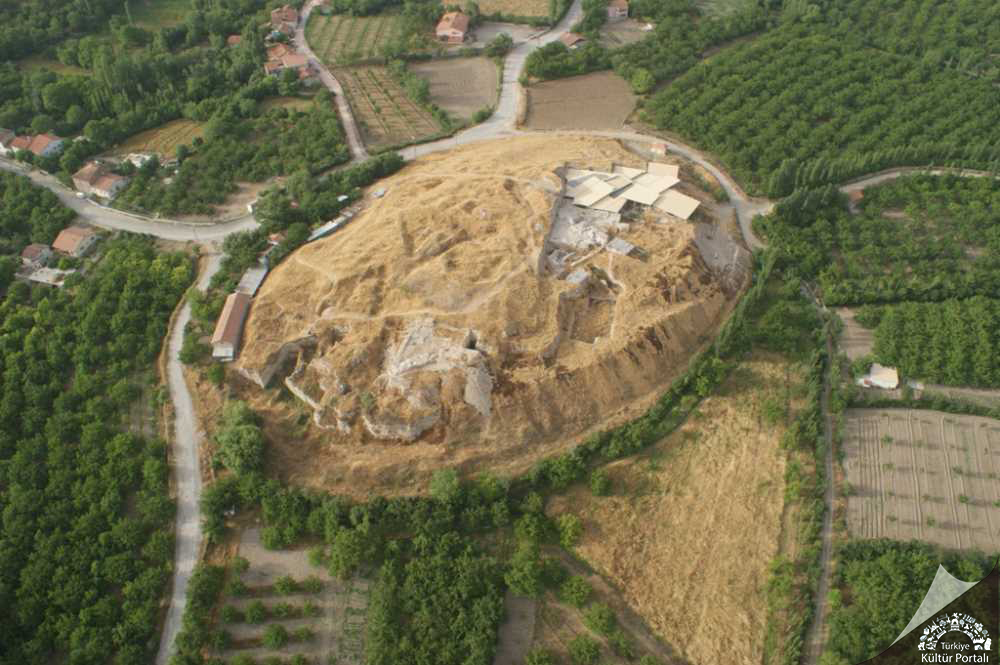
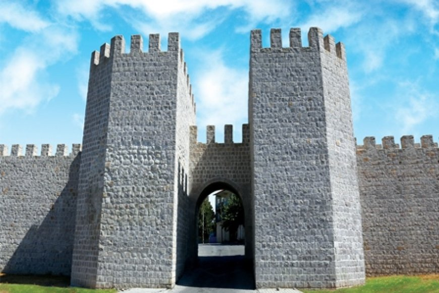
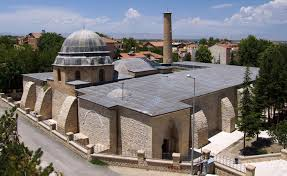

Aslantepe Höyüğü

Arslantepe Höyüğü, 30 metreye varan yüksekliği ve MS 11. yüzyıla kadar kesintisiz yerleşimiyle Anadolu’nun en eski merkezlerinden biridir. Burada açığa çıkarılan saray ve tapınak kalıntıları, çamur tuğla yapılar ve fresklerle, Geç Kalkolitik döneme ait benzersiz izler sunar.
Malatya Kalesi

İlk surlar M.S. I. yüzyılda Roma İmparatorluğu döneminde Titus zamanında başlatılmış, Bizans İmparatoru I. Justinianus’un (532) onarıp tamamladığı bu beşgen planlı savunma sistemi, Battalgazi’deki tarihî kent merkezini çevreler. Yaklaşık 2.850 m uzunluğunda olan surlar, 95 burç ve 11 kapı içerir; iç-dış yüzleri düzgün taşlarla kaplanmış, moloz dolgu ve harçla birleştirilmiştir. Günümüzde batı kapısı ve bazı burç kalıntıları gezilebilir durumdadır.
Battalgazi Ulu Camii

1224 yılında Selçuklu Sultanı I. Alaaddin Keykubad döneminde inşa edilen Battalgazi Ulu Camii, özgün tuğla işçiliği ve kubbe süslemeleriyle dikkat çeker. Şubat 2023 depremlerinde hasar almasına rağmen, restorasyon çalışmalarıyla yeniden ziyarete açılması planlanmaktadır.